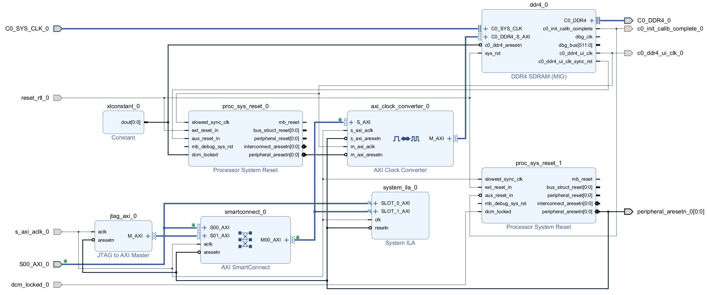
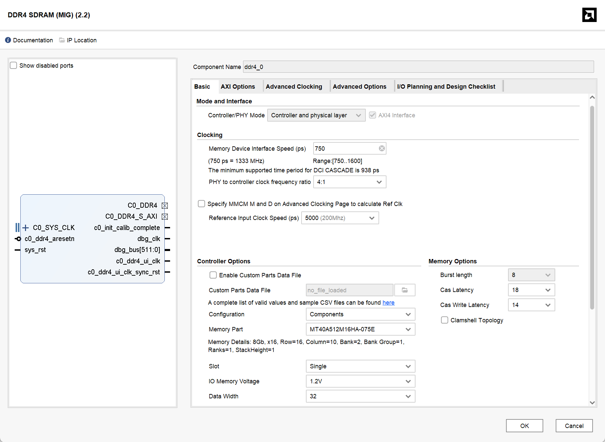
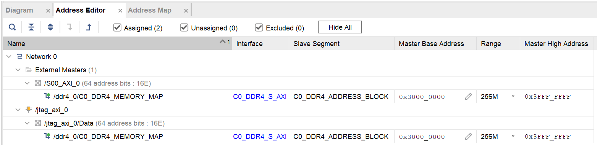

使用 FPGA 上的 DRAM
注意
本教程涉及的 Block Design 配置、物理引脚约束及 DDR4 时序参数仅适用于 Vivado 2024.2 下的 ALINX AXU15EG (ZU15EG) 开发板 PL 端 2GB DDR4 硬件资源，非同构硬件环境请谨慎复用。
1. 简介
本文档旨在解析基于 Vivado 2024.2 环境的 PL 端 DDR4 访问工程。该工程以 Archived .zip 文件形式提供，已完成针对 ALINX AXU15EG 开发板的硬件适配。设计核心在于通过 PL 逻辑直接控制板载 2GB DDR4 资源，而非利用 PS 端系统内存。 文档将首先概述顶层数据链路架构，随后深入解析 DDR4 子系统 Block Design 内部的 IP 配置、时钟域划分及互联逻辑，指导理解并复用该设计。
注意
当前的顶层设计是一个单芯片环回验证方案。SoC、Serial Link 逻辑以及 DDR4 子系统均部署在同一片 FPGA (AXU15EG) 上。真实应用场景下，SoC 将位于独立的芯片（ASIC Tape-out 或另一片 FPGA）上，本 FPGA 仅作为独立的 DDR4 扩展卡，通过板间物理 Serial Link 接口提供存储服务。未来版本将同步更新以支持板间通信模式。
2. 工程环境配置与启动
本设计已归档为 Vivado 工程压缩包。由于 Vivado 版本差异及 License 限制，请按以下步骤操作。
2.1 工程获取与 License 配置
- 获取源码：
工程路径：
/project/holi/common/FPGA_DRAM.xpr.zip请将该文件复制到个人目录并解压： - 配置 License： Vivado 自带的 WebPack License 不支持 xczu15eg-ffvb1156-2-i Device。需加载我的 License：
2.2 版本兼容性处理
由于原工程版本高于当前服务器使用的 Vivado 版本（或版本不一致），直接打开会导致 IP 锁定或综合失败。请执行以下清理步骤：
- 清理旧版缓存：
在打开工程前，进入工程目录下的
.runs文件夹，删除所有.dcp(Design Checkpoint) 文件。 - 升级 IP 核：
打开 Vivado 工程后，进入
Reports->Report IP Status，全选所有 IP 并点击Upgrade Selected。 - 禁用增量编译：
为避免版本差异导致的 Checkpoint 校验错误，请在 Synthesis 和 Implementation 设置中，将 Incremental Synthesis/Implementation 选项暂时设置为
Disable。
3. 系统顶层架构
本设计属于完整的板级通信链路的一部分。数据流自 SoC 发起，经由串行链路传输并转换至 DDR4 Subsystem，最终写入 DDR4 存储器。整体架构分为三个层级：
- 请求发起端 (SoC)：负责产生读写请求。
- 传输与协议转换 (Serial Link Layer)：
- 负责将 SoC 发出的请求通过私有 DDR 信号传输至下述 Block Design。
- 在 FPGA 内将私有串行协议转换成标准的 AXI4 Master 接口信号。
- 存储子系统 (DDR Subsystem / Block Design)：
- 本教程的核心部分。
- 作为 AXI4 Slave 接收来自 Serial Link 的读写指令。
- 负责 AXI 协议到 DDR4 物理层接口 (PHY) 的转换、时序控制及数据存取。
4. DDR4 子系统 Block Design 详解
本章节详细拆解存储子系统的内部构造。该 Block Design 模块化地集成了物理接口、时钟跨域处理、总线互联及硬件调试功能。

4.1 核心模块：DDR4 Memory Interface Generator (MIG)
该模块是设计中连接 AXI 总线与物理 DDR4 颗粒的桥梁。在 Block Design 中双击 IP 核进行配置时，需关注以下关键参数以匹配 AXU15EG 硬件特性。
4.1.1 Basic 选项卡配置
- Controller/PHY Mode: 保持默认的
Controller and physical layer，即同时实例化内存控制器和物理层接口。 - Interface: 勾选
AXI4 Interface。 - Memory Part (颗粒型号):
- 选择 MT40A512M16HA-075E。
- 选型依据: 前缀
MT40A512M16表明这是 Micron 生产的 x16 位宽颗粒，只需选择前缀相同的颗粒即可。后缀-075E代表该颗粒支持的最高时序参数（750ps 周期，即 1333MHz 时钟频率 / 2666 MT/s 数据速率）。即便实际运行频率较低，型号也必须与物理颗粒一致以保证时序参数正确。
- Data Width (位宽): 设置为 32。
- 硬件拓扑: AXU15EG 开发板 PL 端板载了两颗 16-bit 的 DDR4 颗粒并联，共同构成了 32-bit 的物理数据总线。
- Input Clock Period (参考时钟):
- 目标值为 5000 ps (200 MHz)，这是板载差分时钟的频率。
- PLL 限制说明: 该选项受
Memory Device Interface Speed影响。MIG 内部 PLL 需根据目标 DDR 运行速率（如 1200 MHz / 833 ps）和输入时钟计算倍频/分频系数（M/D）。若无法整除，IP 核列表可能不显示精确的 5000ps 选项。此时选择最接近的值（例如 4998 ps / 200.08 MHz）即可，这在 PLL 锁相环允许的误差范围内。

4.1.2 AXI Options 选项卡
- Data Width: 设置为 256。
- Address Width / ID Width: 保持默认（如 31 / 4）即可，工具会自动计算地址空间。
4.1.3 Advanced Clocking 选项卡
- System Clock Option: 设置为 Differential (差分)，PL 端 DDR 参考时钟源为差分晶振。
- UI Clock (用户接口时钟):
- 这是 MIG 输出给用户逻辑的主时钟
c0_ddr4_ui_clk。这里构成了除板载差分时钟外的第一个时钟（即 MIG 时钟域），它与 MIG 时钟域的 AXI 总线（即 MIG 的输入）相关联。你也可以在 Additional Clock Output 选项卡中配置所需的其他时钟。
- 这是 MIG 输出给用户逻辑的主时钟
初始化与校准信号 (c0_init_calib_complete)
DDR4 SDRAM 上电后不能立即进行读写，必须经过复杂的初始化与训练过程。上电后，MIG 控制器会自动执行 ZQ 校准、Write Leveling（写平衡）和 Read Centering（读对中/DQS 训练），以补偿 PCB 走线延迟和信号完整性问题。此过程通常耗时几毫秒至几十毫秒。该信号行为如下：
- 低电平 (0): 训练中，物理层不稳定，禁止读写。
- 高电平 (1): 校准完成，DDR4 可用。
- 系统复位中的作用: 本设计将
c0_init_calib_complete作为系统逻辑复位解除的必要条件。只有当此信号拉高后，proc_sys_reset_1才会释放 AXI 总线复位 (peripheral_aresetn)，从而从杜绝了在 DDR4 未就绪时发起访问的风险。
4.2 跨时钟域处理：AXI Clock Converter
由于系统逻辑与 MIG 运行在不同频率，必须进行跨时钟域 (CDC) 处理以避免亚稳态。
- S_AXI (Slave) 侧：关联至
s_axi_aclk_0，运行于 系统时钟域（100 MHz，这个时钟之后会讲）。此接口面向 Serial Link 模块及外部系统逻辑。 - M_AXI (Master) 侧：关联至
c0_ddr4_ui_clk，运行于 MIG 时钟域（即 333.25 MHz）。此接口直连 DDR4 控制器。
4.3 总线互联：AXI SmartConnect
- 模块功能：作为 AXI 总线交换矩阵，负责多主设备 (Master) 访问单一从设备 (Slave) 的仲裁与路由。
- 连接拓扑：
- Slave 00：连接外部输入的
S00_AXI_0(来自 Serial Link 的数据流)。 - Slave 01：连接内部的
JTAG to AXI Master(用于调试)。 - Master 00：输出至
AXI Clock Converter。
- Slave 00：连接外部输入的
- 作用：将系统逻辑和 JTAG to AXI Master 连接至 DDR4 控制器的 AXI 总线。
4.4 地址空间分配 (Address Editor)
关键配置：打开 Block Design 的 Address Editor 选项卡，必须确保所有模块 (包括 S00_AXI_0 和 jtag_axi_0) 的地址映射符合 soc_pkg.sv 定义。
- 对齐规则：映射的 Range 大小必须与 Offset Address 对齐。
- 示例：若起始地址为
0x30000000，最大映射 Range 只能为 256M (因为0x30000000能被0x10000000整除，但不能被0x40000000整除)。
- 示例：若起始地址为

待修改地址分配
这里为简便占用了原 NPU 的 0x30000000 地址空间，后续会替换掉 Hyperbus，并使用原 Hyperbus 地址空间。
4.5 外部端口配置 (Interface Properties)
关键配置：为避免 Hardware Wrapper 导出报错，需手动配置外部时钟端口关联。
- 选中外部时钟输入端口 (如
s_axi_aclk_0)。 - 在属性窗口 (External Interface Properties) -> Properties -> CONFIG 中找到
ASSOCIATED_BUSIF。 - 填入该时钟驱动的总线接口名称 (如
S00_AXI_0)。
4.6 复位架构与极性管理
本设计涉及多级复位逻辑，由于部分 IP 核的复位极性参数不便配置（灰色锁定），必须严格区分各级信号的有效电平。
- 输入硬复位 (
reset_rtl_0)：高电平有效 (Active High)。若开发板物理按键或上级系统提供的是低电平复位信号（如rst_n），在顶层实例化design_1时必须取反接入（即~rstn_i）。 - 时钟域复位划分：
- MIG 时钟域 (
proc_sys_reset_0)：由 MIG 输出的同步复位驱动，负责复位 AXI Clock Converter 的高速侧接口。 - 系统时钟域 (
proc_sys_reset_1)：由校准完成信号c0_init_calib_complete触发。产生的peripheral_aresetn为低电平有效，用于复位 SmartConnect、JTAG AXI 及 Clock Converter 的低速侧接口。
- MIG 时钟域 (
- 关键依赖：系统设计强制要求 DDR4 完成初始化校准后，低速域的 AXI 总线复位才会被释放。这种跨时钟域的复位链结构确保了总线事务的安全性。
5. 顶层集成与仿真 (Top-Level Integration)
为了验证 PL 端 DDR4 访问链路的可行性，本工程提供了一个完整的 FPGA 顶层参考设计。该顶层模块模拟了一个片上 SoC 通过高速串行链路访问 DDR4 的场景。
5.1 顶层时钟架构 (Clocking Architecture)
由于 DDR4 控制器是系统中时序最严格的部分，顶层时钟架构围绕 MIG 的输出来构建：
- 输入源：
sys_clk_p/n：板载 200 MHz 差分时钟，驱动 DDR4 MIG IP。
- MIG 时钟域 (
ddr_ui_clk)：- 由 MIG IP 核输出，频率约 333.25 MHz。作为 PLL 的参考时钟源，它是全局时钟的第一来源。
- 系统时钟域 (
clk_100m)：- 通过
clk_wiz_0从 333.25 MHz 分频产生 100 MHz。注意，当每次调整了 MIG 和时钟有关的设定后，应查看c0_ddr4_ui_clk的频率，并将clk_wiz_0的输入时钟修改至与之一致。 - 确保
clk_wiz_0输出时钟的 Drives 设置为 BUFG，以保证全局时钟质量。 - PLL 复位连接至
c0_init_calib_complete，确保时钟仅在内存就绪后启动。 - 驱动 SoC 逻辑、Serial Link 控制器以及 Block Design 中的 AXI SmartConnect 等任何非 MIG 的用户侧接口。
- 通过
5.2 数据链路实例化
顶层模块按数据流向依次实例化了以下关键组件：
- SoC (模拟源)：
- 实例化
soc模块产生读写流量。
- 实例化
- Serial Link Wrapper: 执行 Loopback (FPGA 内部短接发送与接收)，将私有协议转换为 AXI4 Master。
- DDR4 Subsystem: 实例化
design_1_wrapper，将 SVstruct信号展平为wire接入 AXI 端口。将C0_DDR4端口映射至 FPGA 顶层 IO，连接开发板的物理 DDR4 引脚。
5.3 状态指示
LED (clk_led_o) 闪烁代表：
1. DDR4 初始化校准通过。
2. MIG 时钟及 PLL 分频后的系统时钟均正常工作。
6. 约束文件 (XDC) 配置
本章节仅涵盖 DDR4 子系统的物理层约束以及硬件调试核心（Debug Hub）的时钟连接配置。
6.1 DDR4 物理接口约束
DDR4 SDRAM 的引脚分配依赖于 AXU15EG 开发板的硬件设计。对于 Zynq UltraScale+ 的 HP Bank，除了物理管脚位置 (PACKAGE_PIN) 外，必须严格约束电平标准 (IOSTANDARD) 和内部参考电压 (INTERNAL_VREF)。
以下代码包含地址/控制总线（SSTL12_DCI）、数据总线（POD12_DCI）及 Bank 65 参考电压的完整约束。
点击展开查看完整 DDR4 XDC 约束代码
# ============================================================================
# 6. DDR4 SDRAM 物理接口约束
# ============================================================================
# --- 地址线 (Address) : SSTL12_DCI ---
set_property PACKAGE_PIN AN9 [get_ports {c0_ddr4_adr[0]}]
set_property PACKAGE_PIN AN6 [get_ports {c0_ddr4_adr[1]}]
set_property PACKAGE_PIN AN7 [get_ports {c0_ddr4_adr[2]}]
set_property PACKAGE_PIN AP5 [get_ports {c0_ddr4_adr[3]}]
set_property PACKAGE_PIN AK8 [get_ports {c0_ddr4_adr[4]}]
set_property PACKAGE_PIN AP7 [get_ports {c0_ddr4_adr[5]}]
set_property PACKAGE_PIN AM10 [get_ports {c0_ddr4_adr[6]}]
set_property PACKAGE_PIN AN8 [get_ports {c0_ddr4_adr[7]}]
set_property PACKAGE_PIN AK7 [get_ports {c0_ddr4_adr[8]}]
set_property PACKAGE_PIN AP10 [get_ports {c0_ddr4_adr[9]}]
set_property PACKAGE_PIN AM6 [get_ports {c0_ddr4_adr[10]}]
set_property PACKAGE_PIN AM8 [get_ports {c0_ddr4_adr[11]}]
set_property PACKAGE_PIN AP4 [get_ports {c0_ddr4_adr[12]}]
set_property PACKAGE_PIN AP8 [get_ports {c0_ddr4_adr[13]}]
set_property PACKAGE_PIN AJ9 [get_ports {c0_ddr4_adr[14]}]
set_property PACKAGE_PIN AP6 [get_ports {c0_ddr4_adr[15]}]
set_property PACKAGE_PIN AP11 [get_ports {c0_ddr4_adr[16]}]
# --- 控制线 (Control/Command) : SSTL12_DCI ---
set_property PACKAGE_PIN AJ10 [get_ports {c0_ddr4_ba[0]}]
set_property PACKAGE_PIN AP9 [get_ports {c0_ddr4_ba[1]}]
set_property PACKAGE_PIN AL10 [get_ports {c0_ddr4_bg[0]}]
set_property PACKAGE_PIN AK10 [get_ports {c0_ddr4_cke[0]}]
set_property PACKAGE_PIN AN4 [get_ports {c0_ddr4_cs_n[0]}]
set_property PACKAGE_PIN AK9 [get_ports {c0_ddr4_odt[0]}]
set_property PACKAGE_PIN AM9 [get_ports c0_ddr4_act_n]
# --- 差分时钟 (CK) : DIFF_SSTL12_DCI ---
set_property PACKAGE_PIN AL6 [get_ports {c0_ddr4_ck_t[0]}]
set_property PACKAGE_PIN AL5 [get_ports {c0_ddr4_ck_c[0]}]
# --- 复位 (Reset) : LVCMOS12 ---
set_property PACKAGE_PIN AM5 [get_ports c0_ddr4_reset_n]
set_property IOSTANDARD LVCMOS12 [get_ports c0_ddr4_reset_n]
# --- 统一设置 ADDR/CMD/CLK 的电平标准 ---
set_property IOSTANDARD SSTL12_DCI [get_ports {c0_ddr4_adr[*]}]
set_property IOSTANDARD SSTL12_DCI [get_ports {c0_ddr4_ba[*]}]
set_property IOSTANDARD SSTL12_DCI [get_ports {c0_ddr4_bg[*]}]
set_property IOSTANDARD SSTL12_DCI [get_ports {c0_ddr4_cke[*]}]
set_property IOSTANDARD SSTL12_DCI [get_ports {c0_ddr4_cs_n[*]}]
set_property IOSTANDARD SSTL12_DCI [get_ports {c0_ddr4_odt[*]}]
set_property IOSTANDARD SSTL12_DCI [get_ports c0_ddr4_act_n]
set_property IOSTANDARD DIFF_SSTL12_DCI [get_ports {c0_ddr4_ck_t[*]}]
set_property IOSTANDARD DIFF_SSTL12_DCI [get_ports {c0_ddr4_ck_c[*]}]
# --- 数据线 (DQ) : POD12_DCI ---
# Byte 0
set_property PACKAGE_PIN AE2 [get_ports {c0_ddr4_dq[0]}]
set_property PACKAGE_PIN AG3 [get_ports {c0_ddr4_dq[1]}]
set_property PACKAGE_PIN AD1 [get_ports {c0_ddr4_dq[2]}]
set_property PACKAGE_PIN AF2 [get_ports {c0_ddr4_dq[3]}]
set_property PACKAGE_PIN AD2 [get_ports {c0_ddr4_dq[4]}]
set_property PACKAGE_PIN AH3 [get_ports {c0_ddr4_dq[5]}]
set_property PACKAGE_PIN AE1 [get_ports {c0_ddr4_dq[6]}]
set_property PACKAGE_PIN AF1 [get_ports {c0_ddr4_dq[7]}]
set_property PACKAGE_PIN AH2 [get_ports {c0_ddr4_dm_n[0]}]
set_property PACKAGE_PIN AH1 [get_ports {c0_ddr4_dqs_t[0]}]
set_property PACKAGE_PIN AJ1 [get_ports {c0_ddr4_dqs_c[0]}]
# Byte 1
set_property PACKAGE_PIN AE3 [get_ports {c0_ddr4_dq[8]}]
set_property PACKAGE_PIN AH4 [get_ports {c0_ddr4_dq[9]}]
set_property PACKAGE_PIN AD4 [get_ports {c0_ddr4_dq[10]}]
set_property PACKAGE_PIN AG4 [get_ports {c0_ddr4_dq[11]}]
set_property PACKAGE_PIN AE4 [get_ports {c0_ddr4_dq[12]}]
set_property PACKAGE_PIN AG5 [get_ports {c0_ddr4_dq[13]}]
set_property PACKAGE_PIN AF3 [get_ports {c0_ddr4_dq[14]}]
set_property PACKAGE_PIN AJ4 [get_ports {c0_ddr4_dq[15]}]
set_property PACKAGE_PIN AE5 [get_ports {c0_ddr4_dm_n[1]}]
set_property PACKAGE_PIN AJ6 [get_ports {c0_ddr4_dqs_t[1]}]
set_property PACKAGE_PIN AJ5 [get_ports {c0_ddr4_dqs_c[1]}]
# Byte 2
set_property PACKAGE_PIN AD6 [get_ports {c0_ddr4_dq[16]}]
set_property PACKAGE_PIN AG8 [get_ports {c0_ddr4_dq[17]}]
set_property PACKAGE_PIN AF6 [get_ports {c0_ddr4_dq[18]}]
set_property PACKAGE_PIN AF7 [get_ports {c0_ddr4_dq[19]}]
set_property PACKAGE_PIN AD7 [get_ports {c0_ddr4_dq[20]}]
set_property PACKAGE_PIN AH8 [get_ports {c0_ddr4_dq[21]}]
set_property PACKAGE_PIN AE7 [get_ports {c0_ddr4_dq[22]}]
set_property PACKAGE_PIN AG6 [get_ports {c0_ddr4_dq[23]}]
set_property PACKAGE_PIN AH7 [get_ports {c0_ddr4_dm_n[2]}]
set_property PACKAGE_PIN AE8 [get_ports {c0_ddr4_dqs_t[2]}]
set_property PACKAGE_PIN AF8 [get_ports {c0_ddr4_dqs_c[2]}]
# Byte 3
set_property PACKAGE_PIN AE12 [get_ports {c0_ddr4_dq[24]}]
set_property PACKAGE_PIN AG9 [get_ports {c0_ddr4_dq[25]}]
set_property PACKAGE_PIN AH11 [get_ports {c0_ddr4_dq[26]}]
set_property PACKAGE_PIN AE9 [get_ports {c0_ddr4_dq[27]}]
set_property PACKAGE_PIN AH12 [get_ports {c0_ddr4_dq[28]}]
set_property PACKAGE_PIN AG10 [get_ports {c0_ddr4_dq[29]}]
set_property PACKAGE_PIN AF12 [get_ports {c0_ddr4_dq[30]}]
set_property PACKAGE_PIN AD10 [get_ports {c0_ddr4_dq[31]}]
set_property PACKAGE_PIN AE10 [get_ports {c0_ddr4_dm_n[3]}]
set_property PACKAGE_PIN AF11 [get_ports {c0_ddr4_dqs_t[3]}]
set_property PACKAGE_PIN AG11 [get_ports {c0_ddr4_dqs_c[3]}]
# --- 统一设置 DQ/DQS/DM 的电平标准 ---
set_property IOSTANDARD POD12_DCI [get_ports {c0_ddr4_dq[*]}]
set_property IOSTANDARD POD12_DCI [get_ports {c0_ddr4_dm_n[*]}]
set_property IOSTANDARD DIFF_POD12_DCI [get_ports {c0_ddr4_dqs_t[*]}]
set_property IOSTANDARD DIFF_POD12_DCI [get_ports {c0_ddr4_dqs_c[*]}]
# ============================================================================
# 7. Bank 65 VREF 设置 (关键!)
# ============================================================================
# 因为 Bank 65 包含了部分 DDR4 数据线，必须启用内部参考电压
set_property INTERNAL_VREF 0.6 [get_iobanks 65]
6.2 Debug Hub 时钟连接
Vivado 的 dbg_hub 负责管理所有的 ILA，它需要连接到自由运行 (Free-running) 的时钟。由于 MIG UI Clock 上电初期不可用，必须将 Debug Hub 强制连接到板载 200MHz 输入缓冲器输出。它会自动处理跨时钟域的问题。如让其自动配置，dbg_hub 可能会被连接到任意时钟上（尤其是在 ILA 较多，且在 debug 多个时钟域的信号时），这会导致 Vivado 无法检测到 Debug Hub，报错 WARNING: [Labtools 27-3361] The debug hub core was not detected，进而在 Hardware Manager 里无法找到你应有的 ILA。
请使用以下 Tcl 脚本定位网络名称并添加至 XDC 末尾：
FIXME!!!
待添加
注意
若增加过多 ILA 或多个时钟域的 ILA 可能导致时序违例，请适当减少探针数量。
7. JTAG 硬件回环验证
在不依赖 CPU 的情况下，通过 Vivado Tcl Console 直接控制 jtag_axi_0 验证 DDR4 读写链路。
7.1 初始化总线
防止死锁：
7.2 单次写测试
向地址 0x30000000 写入数据：
create_hw_axi_txn write_cmd [get_hw_axis hw_axi_1] -address 30000000 -data 1122334455667788 -len 1 -type write -force
run_hw_axi write_cmd
7.3 单次读测试
create_hw_axi_txn read_cmd [get_hw_axis hw_axi_1] -address 30000000 -len 1 -type read -force
run_hw_axi read_cmd
7.4 批量突发读取 (Dump Memory)
读取 16 个 64-bit 数据：
create_hw_axi_txn dump_mem [get_hw_axis hw_axi_1] -address 30000000 -len 16 -type read -force
run_hw_axi dump_mem
附录 A: 常见问题与排查 (FAQ)
A.1 时序违例：Pulse Width (TPWS) 失败
现象：Implementation 后 MIG PLL 输出出现 Pulse Width 违例。
解决方案：在 Implementation Settings -> Strategy 中，选择 Performance_ExplorePostRoutePhysOpt，这有一定可能解决。
A.2 AXI 频率报错
现象：[BD 41-237] Bus Interface property FREQ_HZ does not match...
解决方案：检查 4.5 节 提到的 ASSOCIATED_BUSIF 及 Block Design 端口上的 FREQ_HZ 属性，确保与实际物理时钟频率一致。